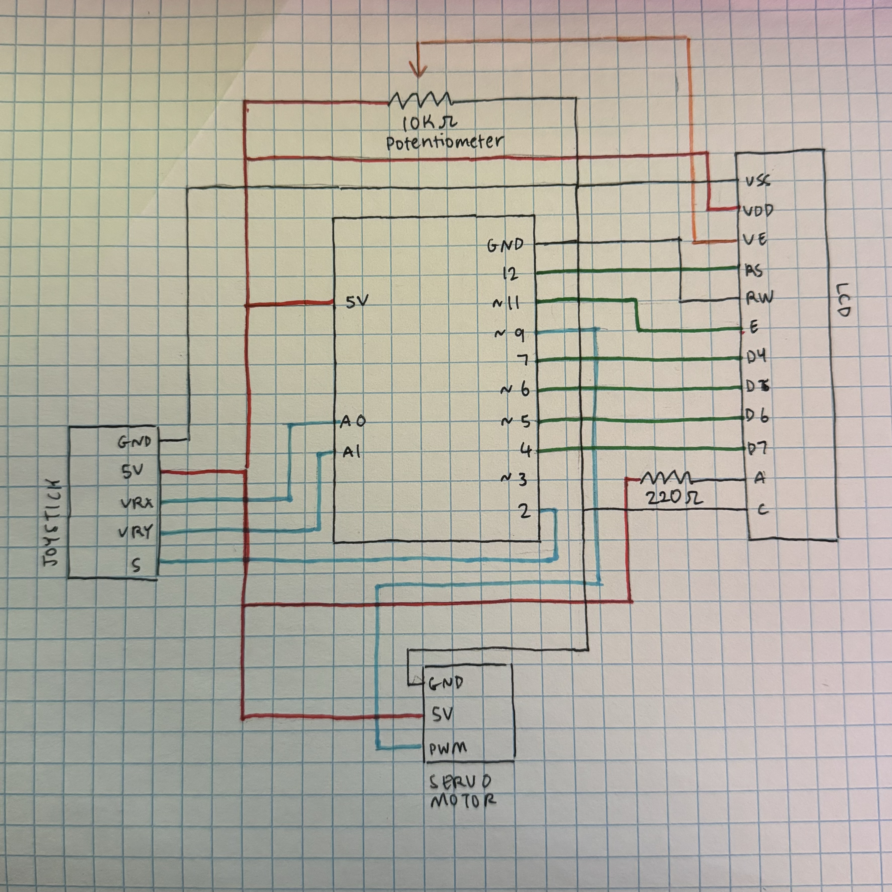
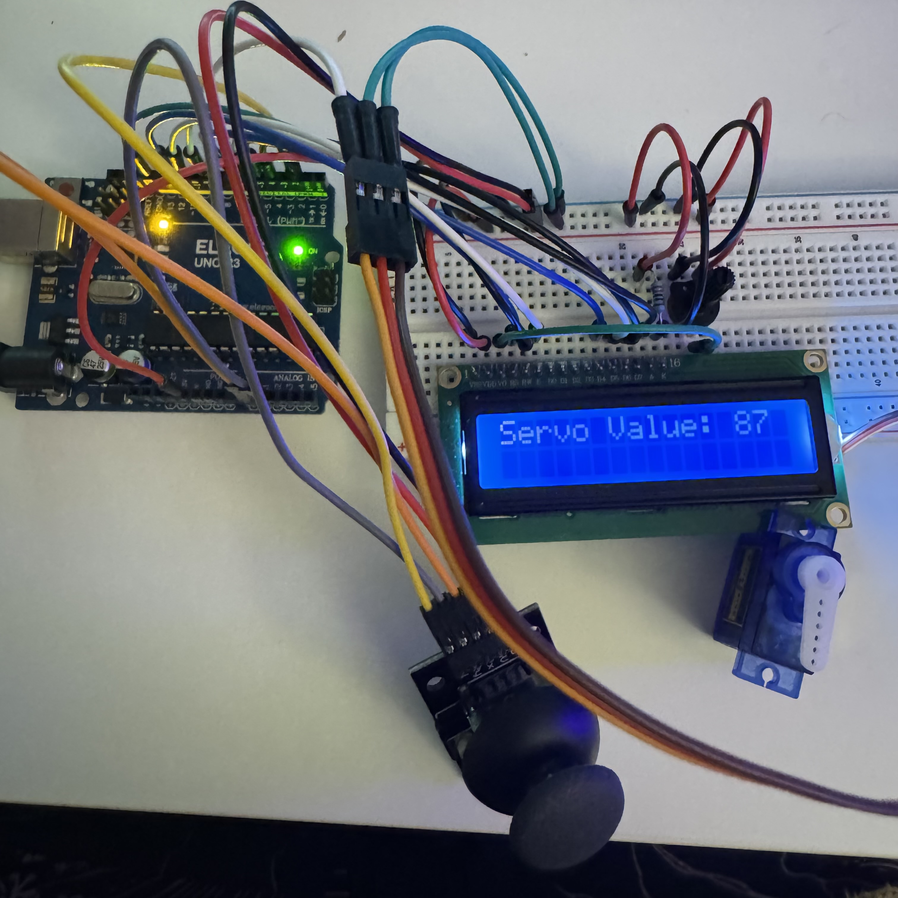
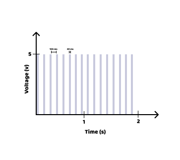

This assignment was a lot more open-ended than the previous ones.
Assignment 4 called us to experiment with more than one library
in Arduino and make something ~cool~ with them. Shown in the GIF on
the left, I used a joystick to rotate a servo motor up to 180 degrees,
displaying the angle it is positioned on an LCD. The two libraries
I used were LiquidCrystal and Servo.

Here is the schematic that includes all components of my assignment.
On the right of the Arduino is the LCD, which has attached two resistors.
The first resistor is a 10KΩ potentiometer, which is needed
to adjust the contrast/brightness of the LCD screen. This helped me
when recording the GIF for the assignment, and making sure that
the text was showing up on my camera. The other resistor is 220Ω,
which was used to limit the current flowing through the backlight
of the LCD. On the left and bottom we have the joystick and servo motor,
respectively. I want to note that I had connected VrY to the A1 pin
on the Arduino (both in the schematic and the circuit), but I did
not end up using them functionally in my code.

Here is a still photo of my circuit when there is no movement
coming from the joystick. On the LCD screen, you can see the servo
value is printed in the top left, which represents the angle of
the servo motor in its current state. While resting, the angle is
at 87 degrees (ideally I would've wanted it at 90 degrees, though
I couldn't achieve this even with calibration).
/* note: omitted brackets around library names in vscode because it was
making the text inside them disappear */
#include LiquidCrystal.h /* library to use 16x2 LCD */
#include Servo.h /* library to use Servo motor */
Servo myservo; /* creates a servo object */
int x; /* variable for axis that the joystick will move along */
int servo_val; /* variable for the angle that the servo positions at */
int servo_min = 0; /* used for calibrating the minimum angle */
int servo_max = 1023; /* used for calibrating the maximum angle */
LiquidCrystal lcd(12, 11, 7, 6, 5, 4); /* establishes the pins the lCD is connected to */
/* method to set-up the program */
void setup() {
pinMode(A0, INPUT); /* establishes the joystick as an input device */
myservo.attach(9); /* establishes the pin connected to the servo motor */
/* calibration code for the first 5 seconds */
while (millis() < 5000) {
servo_val = analogRead(A0);
if (servo_val > 1023) {
servo_max = servo_val; /* establishes a minimum angle */
}
if (servo_val < servo_min) {
servo_min = servo_val; /* establishes a maximum angle */
}
}
lcd.begin(16, 2); /* start-up for the LCD */
lcd.print("Calibrated."); /* tells the user when the system is calibrated */
delay(1000); /* delays the code for 1 second */
lcd.clear(); /* clears the LCD before the next task */
}
/* loop method that will run as long as the program is uploaded */
void loop() {
x = analogRead(A0); /* reads the x-position of the joystick */
servo_val = map(x, 0, 1023, 0, 180); /* maps the code to 0-180 degrees */
lcd.setCursor(0, 0); /* positions where the text will go on the LCD */
/* prints the angle of the servo motor on the LCD based on the movement of the joystick */
lcd.print("Servo Value: ");
lcd.print(servo_val);
myservo.write(servo_val);
delay(500); /* delays the code for 500 milliseconds */
lcd.clear(); /* clears the LCD so previous values don't overlap onto each other */
}
Additional Questions
1. To begin, one documentation states that the PWM for a servo
motor is approximately 20ms. Knowing that the delay between each
turn in the for-loop is 100ms, I graphed each step + delay
as approximately 120ms. Not pictured but an important
consideration is that as the steps increase, the PWM of the servo motor
will also increase (because it takes slightly longer for the servo
motor to achieve a bigger angle). It's also worth noting that when
pin 9 is activated on the Arduino, it uses approximately 5V.
And since voltage is not controlled by the servo.write function,
we can rule out the angle of the servo from varying the voltage
of the pin.

2.
a. To begin, we can start by establishing variables (i.e. min
and max values of the servo angle) so that we can calibrate
the reading at the beginning of the program.
b. Next time the program is uploaded, the input device should calibrate
and the readings should fall within the min and max values set iniitally.
c. In the case that an erroneous value is still read, an error-checking
mechanism can be put in place to discard any incorrect readings and
prompt the user to try again (to replace the discarded reading).
3.
a. To begin, we would also want to start by establishing variables
like the min and max values that the servo motor should be
constrained to.
b. Then, we would want to calibrate the input device. While the input
device is calibrating, calculate an average of the readings.
c. Once the device is calibrated and you begin to collect readings,
continue keeping track of the average value. If a read value deviates
at least 10% away from the average (either 10% higher or lower), then
it would be considered noisy.
d. When a noisy reading is encountered, discard the reading and replace
the reading with a more accurate value. To receive a more accurate value,
the user can be prompted to do the action again (i.e. move the joystick
around the same way they previously did) to get a different reading.